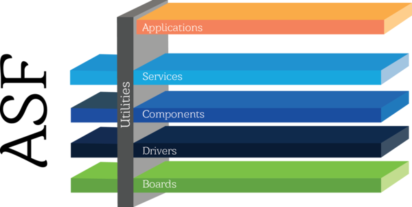
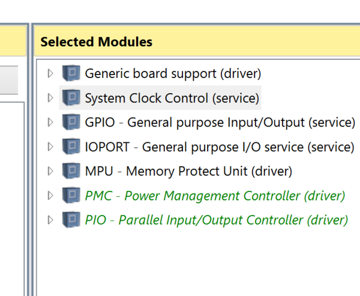
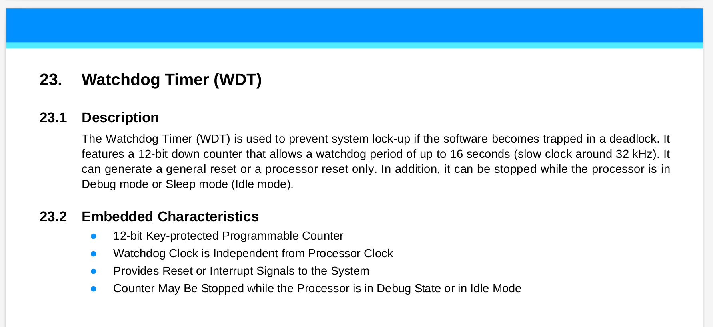
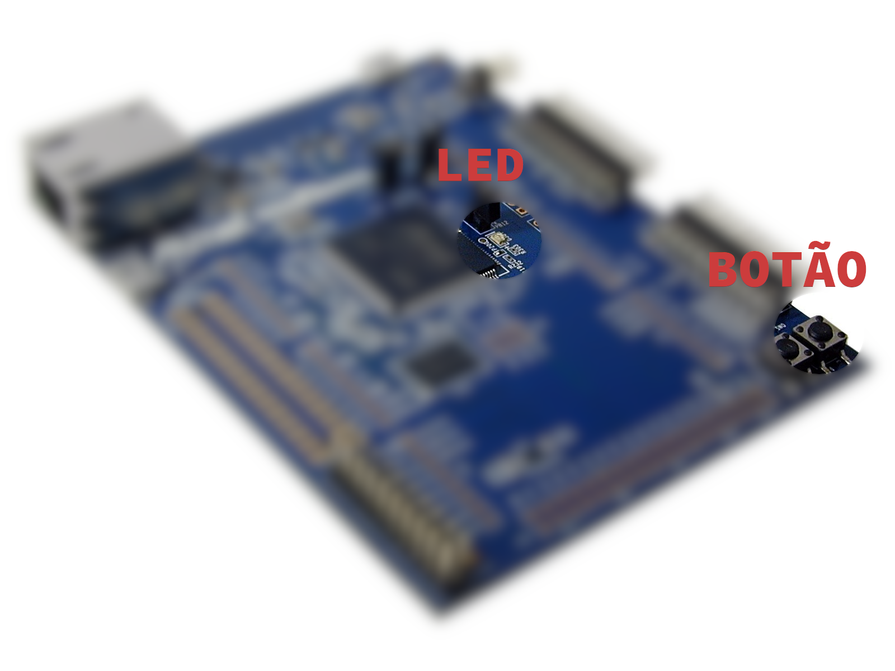
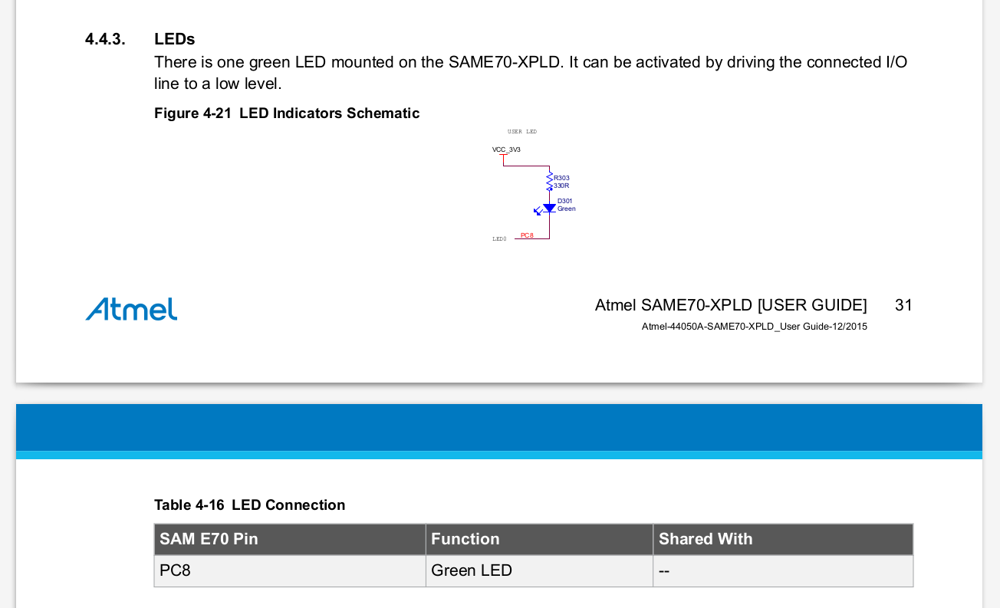
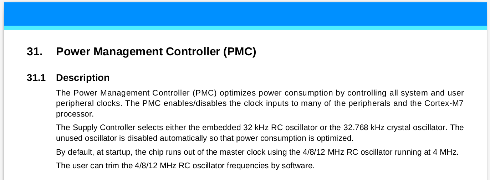
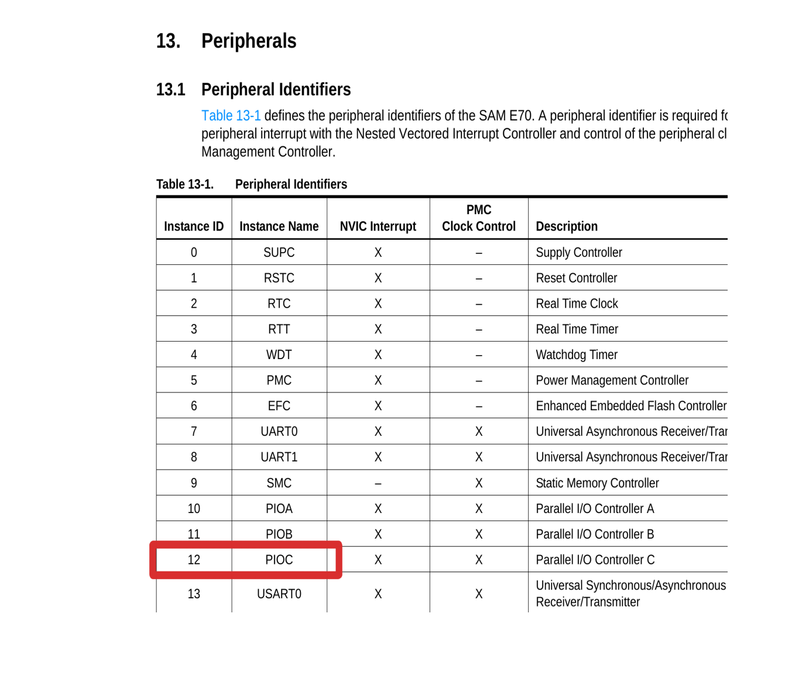

LAB 1 - PIO¶
Ao final desse laboratório você deve ser capaz de controlar pinos digitais do microcontrolador a fim de podermos acionar saídas (LEDs/ Buzzers/ motores) e lermos entradas (botões/ sensores/ ...).
Info
Para criar o repositório de entregas entrar no link a seguir:
Preencher ao finalizar o lab
Entrega¶
| Pasta |
|---|
PIO-IO |
- Ao final da aula:
- Um LED piscando a cada segundo
- A leitura de um botão (entrada)
- LED acionado pelo botão
- APS:
- Já da para começar a primeira APS! Um sistema embarcado que reproduz uma música monofonia
Laboratório¶
Nesse lab iremos utilizar um projeto de referência SAME70-examples/SAME70-Clear que foi criado para ser o mais “limpo” possível, inclusive, faltando algumas bibliotecas (ASF) básicas para a compilação. Para executarmos esse lab, seguiremos os seguintes passos:
Parte 1:
- Inserir drivers no projeto (ASF)
- Isso será feito no próprio Microchip Studio!
- Configurações básicas do uC (clock e WDT)
- Configurar PIO para controlar pino do LED em modo saída
- Acionar o pino
Parte 2:
- Configurar o PIO para controlar o pino do botão em modo entrada
- Ler o botão e agir sobre o LED
Copie a pasta SAEM70-Clear para dentro do repositório criado pelo classroom, renomear a pasta para PIO-IO e trabalhar nela!
Tarefa: començando
- Clone o repositório
SAME70-examplespara a sua máquina. - Copie a pasta
SAME70-Clearpara o seu repositório. - Renomei a pasta para
PIO-IO - Abra o projeto da pasta recém criada no Microchip Studio
Inicializando e configurando ASF¶
Já com o Microchip Studio aberto verifique o conteúdo do arquivo main.c o mesmo deve estar praticamente vazio salvo comentários, inclusão do arquivo asf.h e duas função init e main:
#include "asf.h"
// CÓDIGO OMITIDO
// Função de inicialização do uC
void init(void)
{
}
/************************************************************************/
/* Main */
/************************************************************************/
// Funcao principal chamada na inicalizacao do uC.
int main(void)
{
init();
// super loop
// aplicacoes embarcadas não devem sair do while(1).
while (1)
{
}
return 0;
}
O arquivo do tipo header asf.h é criado e atualizado dinamicamente pelo Microchip Studio e contém os frameworks/drivers inseridos no projeto. O Advanced Software Framework (ASF) é uma camada de abstração do acesso ao hardware, possibilitando que configuremos partes específicas do uC em um nível de abstração intermediário.

Note
Pense no ASF como uma biblioteca de códigos, que vai nos ajudar a programar o uC. Nela podemos encontrar drivers para os diversos periféricos e também softwares para rede, gerenciamento de arquivos ... .
A função init será utilizada para inserirmos códigos que farão a inicialização do uC e configuração correta dos periféricos e pinos. Já a função main é a primeira função a ser executada no uC (devido a linguagem C) e será a orquestradora de todo o sistema, como ilustrado a seguir:
/** File: main.c **/
main(){
// inicialização CLK
// inicialização PMC
// inicialização PIO
init();
while(1){
// Lógica
}
}
Modificando o ASF¶
No Microchip Studio abra o ASF Wizard clicando na barra superior em: ASF 
ASF Wizard. Após um tempo (sim demora para abrir) uma janela deve abrir contendo: a esquerda uma lista dos possíveis drivers que podem ser utilizados para o microcontrolador e na coluna da direita os drivers/bibliotecas já inseridas na solução.
Info
No Microchip Studio um projeto contém uma cópia dos códigos das bibliotecas utilizadas, se você editar essa cópia novos projetos não serão impactados.
As seguintes bibliotecas já estão selecionadas e incluídas no projeto:
- Generic board support (driver)
- drivers de compilação para o uC da placa
- System Clock Control (service)
- funções para controle do clock do uC
Será necessário adicionar as seguintes bibliotecas (APIs/ drivers) a esse projeto:
Tarefa
Você deve inserir as bibliotecas a seguir no projeto!
- GPIO - General purpose Input/OutPut (service)
- funções para configuração do PIO
- IOPORT - General purpose I/O service (service)
- funções para controle dos pinos
- MPU - Memory Protect Unit (driver)
- funções para gerenciamento de memória
- PMC - Power Management Controller (driver)
- funções para configuração do periférico PMC e controle de clock dos periféricos
- PIO - Parallel Input/Output Controller (driver)
- funções para controle do periférico PIO e controle dos pinos
- Delay routines
- funções de delay (por software)
Info
Para adicionar ou remover bibliotecas da solução utilize a barra inferior:

Ao final clique em APPLY para salvar as alterações.
Inicialização do uC¶
Antes da execução do nosso código é necessário realizarmos configurações no uC que irão preparar o core. Essas configurações variam de uC para uC e podem incluir a configuração de:
- clock
- memória de execução / cache
- Desativar funcionalidades específicas
- terminal para debug (printf)
No nosso caso iremos começar configurando o clock do uC e desativando o WatchDog Timer.
Tarefa: função init()
Modifique a função init() para ficar como a seguir:
// Função de inicialização do uC
void init(void){
// Initialize the board clock
sysclk_init();
// Desativa WatchDog Timer
WDT->WDT_MR = WDT_MR_WDDIS;
}
A função sysclk_init() é responsável por aplicar as configurações do arquivo config/conf_clock.h no gerenciador de clock do microcontrolador, que está configurado para operar em300 MHz.
Já a linha WDT->WDT_MR = WDT_MR_MDDIS faz com que o watchdog do microcontrolador seja desligado.
Info
WatchDog Timer como o próprio nome diz é um cão de guarda do microcontrolador. Ele é responsável por verificar se o código está 'travado' em alguma parte, causando o reset forçado do uC.
O whatchdog timer deve ser ativado só nos estágios finais de desenvolvimento de um produto.

Pino como saída (output)¶
Para configurarmos um pino como saída será necessário seguirmos os passos a seguir:
- Identificar o pino a ser controlado (extrair dados do manual/ placa/ projeto)
- Exportar para o código informações do pino
- Ativar/Energizar o periférico (PIO) responsável pelo pino
- Configurar o PIO para controlar o pino como saída
- Controlar o pino (high/low).
Dados do pino¶
Antes de configurarmos um pino como entrada (botão) ou saída (LED) é necessário descobrimos qual pino iremos controlar, para isso devemos verificar o manual da placa (manuais/SAME70-XPLD.pdf) para saber quais pinos possuímos disponíveis para uso. No caso da nossa placa, possuímos um pino conectado a um botão e outro pino conectado ao LED (já vieram montados na placa).

Todos os pinos digitais desse microcontrolador (em outros uC pode ser diferente) são conectados ao um periférico chamado de Parallel Input/Output Controller (PIO), esse periférico é responsável por configurar diversas propriedades desses pino, inclusive se será entrada ou saída (configurado individualmente). Cada PIO pode controlar até 32 pinos (depois veremos o porque disso), e cada pino está conectado a um único PIO.
Cada PIO possui um nome referenciado por uma letra: PIO A ; PIO B; PIO C;.... E cada pino possui um número único dentro desse PIO, por exemplo PIOA11 referencia o "pino 11" do "PIOA". Outra notação utilizada no manual é PA11, que representa a mesma coisa.
SAME70-XPLD.pdf
A secção 4.4.3 LED do SAME70-XPLD
descreve como o LED do kit de desenvolvimento foi utilizado na placa, a partir dessa secção
conseguimos responder:
- Qual pino do uC controla o LED
- Se colocarmos 1 (vcc/ ligado) no pino conectado ao LED, ele irá acender ou apagar

A tabela Table 4-16 LED Connection descreve qual o pino e qual PIO o LED do kit foi conectado, podemos a partir dos dados do manual extrair que o LED foi conectado ao pino PC8 do microcontrolador, isso significa que:
- O periférico PIO C, 'bit' 8 é responsável por controlar o Liga/Desliga do LED verde da placa.
- Que o LED apaga quando o pino é acionado (pino ligado/ um no pino/ high) e acende quando aterrado (pino desligado/ zero no pino/ low)
Podemos sintetizar as informações do PIO que controla o pino na tabela a seguir:
| SAME70-XPLD | PIO | Index | ID_PIO |
|---|---|---|---|
| LED | PIOC | 8 | 12 |
Agora será necessário transcrever essas informações para o nosso código em C, para isso iremos usar um recurso de C chamado define
Tarefa: Modifique main.c
Iremos incorporar essa informação no nosso código via os #defines no começo do main.c:
#include "asf.h"
#define LED_PIO PIOC // periferico que controla o LED
#define LED_PIO_ID ??? // ID do periférico PIOC (controla LED)
#define LED_PIO_IDX 8 // ID do LED no PIO
#define LED_PIO_IDX_MASK (1 << LED_PIO_IDX) // Mascara para CONTROLARMOS o LED
Warning
Note que o LED_PIO_ID está incompleto (???), vamos preencher na sequência.
#define
O #define é uma macro, ou seja, é um recurso de C que é executado
em tempo de compilação, o define é diferente de uma variável/ constant
pois o compilador não irá alocar um endereço de memória para ela.
Antes de compilar o programa, o compilador irá varrer o seu código fonte
e substituir todos os defines pelos valores definidos.
Pense nisso como um recurso que facilita a vida do programador.
init()¶
Vamos implementar os códigos necessários para configurarmos o pino como saída na função init
PMC¶
Antes de podemos configurar um PIO para controlar um pino é necessário ativarmos esse periférico. A maioria dos periféricos do SAME70 inicializam desligados, isso é feito para: diminuir o gasto energético; impedir um periférico que não foi configurado que execute.
Info
O Power Managament Controller (PMC) é o periférico responsável por "ligar/desligar" os demais periféricos, isso é feito via a liberação ou não do clock para os periféricos. O PMC possui também diversas outras funcionalidades, como descrito no manual do microcontrolador (SAME70 Datasheet):

Cada periférico do uC possui um ID de identificação (sec 13 SAME70 Datasheet) que é utilizado em duas situações: Para indicar ao PMC e ao NVIC (veremos futuramente) qual periférico estamos nos referindo. A seguir uma parte dessa tabela extraída do datasheet.

 Note pela tabela que o PIOC (aquele que irá controlar o LED) possui ID 12, agora precisamos transpor isso para o nosso código! Vamos editar a linha do nosso
Note pela tabela que o PIOC (aquele que irá controlar o LED) possui ID 12, agora precisamos transpor isso para o nosso código! Vamos editar a linha do nosso main.c que possuia o ???:
Tarefa: Modifique main.c
Insira o valor 12 no lugar do ??? no define LED_PIO_ID
#define LED_PIO_ID 12 // ID do periférico PIOC (controla LED)
Tip
No lugar de ficar abrindo o manual, podemos usar ID_PIOC no código:
#define LED_PIO_ID ID_PIOC // ID do periférico PIOC (controla LED)
o ASF possui esses defines que facilitam muito o desenvolvimento e minimizam erros.
Tarefa: Modifique main.c
Troque o número 12 do define por ID_PIOC
O PMC possui diversas funções, estamos agora interessado naquela que ativa um periférico para podermos usar. Essa função é a pmc_enable_periph_clk(uint32_t ul_id) que recebe como parâmetro o ID do periférico que queremos ativar.
Modifique init()
Insira o seguinte trecho de código na nossa função de inicialização (init()) logo após desativarmos o WDT:
// Ativa o PIO na qual o LED foi conectado
// para que possamos controlar o LED.
pmc_enable_periph_clk(LED_PIO_ID);
Tip
note que estamos usando o define: LED_PIO_ID que foi inserindo no código por vocês, e não o valor 12, isto é importante porque deixa o código mais claro.
Configurando o pino do LED¶
Todo pino no PIO é inicializado em modo entrada, para usarmos como saída será necessário indicarmos ao PIO. Para isso, usaremos a seguinte função pio_set_output(...), definida no ASF do SAME70.
Tarefa: Modifique init()
Inseria a seguinte chamada de função na inicialização. Isso configura o PIOC para tratar o bit 8 (index 8) como saída.
//Inicializa PC8 como saída
pio_set_output(LED_PIO, LED_PIO_IDX_MASK, 0, 0, 0);
Podemos ler: essa função configura o index 8 (LED_PIO_IDX) do PIOC como sendo saída inicializada em '0', sem multidrive e sem resistor de pull-up.
Note
Note que a função recebe como parâmetro o PIO que ela ira editar e a máscara LED_PIO_IDX_MASK, isso será similar nas demais funções utilizadas. Veremos o porque disso no próximo laboratório.
A função pio_set_output() possui os seguintes parâmetros:
void pio_set_output ( Pio * p_pio,
const uint32_t ul_mask,
const uint32_t ul_default_level,
const uint32_t ul_multidrive_enable,
const uint32_t ul_pull_up_enable
);
Sendo:
- p_pio Pointer to a PIO instance.
- ul_mask Bitmask indicating which pin(s) to configure.
- ul_default_level Default level on the pin(s).
- ul_multidrive_enable Indicates if the pin(s) shall be configured as open-drain.
- ul_pull_up_enable Indicates if the pin shall have its pull-up activated.
Tip
Após todas as etapas anteriores sua função init() deve ter ficado como a seguir:
// Função de inicialização do uC
void init(void){
// Initialize the board clock
sysclk_init();
// Disativa WatchDog Timer
WDT->WDT_MR = WDT_MR_WDDIS;
// Ativa o PIO na qual o LED foi conectado
// para que possamos controlar o LED.
pmc_enable_periph_clk(LED_PIO_ID);
//Inicializa PC8 como saída
pio_set_output(LED_PIO, LED_PIO_IDX_MASK, 0, 0, 0);
}
Interagindo com o LED¶
Uma vez que as configurações gerais do uC já foram realizadas (clock e WDT) e que o periférico PIO C já está pronto para acionar o LED (ou o que estiver conectado nele) podemos começar a fazer nossa implementação na função main. Duas são as funções que iremos usar para acionar ou limpar um determinado pino:
// coloca 1 no pino do LED.
pio_set(PIOC, LED_PIO_IDX_MASK);
// coloca 0 no pino do LED
pio_clear(PIOC, LED_PIO_IDX_MASK);
Tarefa: Modifique main()
Modifique a função main para fazermos o LED piscar interruptamente (1 -> delay 200 ms -> 0 -> delay 200 ms -> ....):
// Funcao principal chamada na inicalizacao do uC.
int main(void)
{
// inicializa sistema e IOs
init();
// super loop
// aplicacoes embarcadas não devem sair do while(1).
while (1)
{
pio_set(PIOC, LED_PIO_IDX_MASK); // Coloca 1 no pino LED
delay_ms(200); // Delay por software de 200 ms
pio_clear(PIOC, LED_PIO_IDX_MASK); // Coloca 0 no pino do LED
delay_ms(200); // Delay por software de 200 ms
}
return 0;
}
Tarefa: Programe e teste
- Programe o uC
- Verifique o resultado esperado
- Brinque com os valores da função
delay_ms
Analogia ao Arduino
No arduino esse mesmo código seria escrito como:
// the setup function runs once when you press reset or power the board
void setup() {
// initialize digital pin LED_BUILTIN as an output.
pinMode(LED_BUILTIN, OUTPUT);
}
// the loop function runs over and over again forever
void loop() {
digitalWrite(LED_BUILTIN, HIGH); // turn the LED on (HIGH is the voltage level)
delay(1000); // wait for a second
digitalWrite(LED_BUILTIN, LOW); // turn the LED off by making the voltage LOW
delay(1000); // wait for a second
}
O Arduino esconde a função main(), que seria:
void main(void){
init();
setup();
while(1){
loop();
}
}
Note que a função setup() do arduino precede de uma oura função init() que possui funcionalidade parecidas com a nossa de inicializar o clock do sistema e desabilitar o WDT.
Pino as input¶
Para configurarmos um pino como entrada será necessário:
- Identificar o pino a ser controlado (extrair dados do manual)
- Exportar para o código informações do pino
- Ativar o periférico (PIO) responsável pelo pino
- Configurar o PIO para controlar o pino como entrada
- Ler o valor do pino.
Extraindo dados do manual¶
O kit de desenvolvimento SAME7-XPLD possui dois botões, um deles reservado para o reset do microcontrolador e outro de uso geral.
Utilizando o manual do kit de desenvolvimento (SAME70-XPLD.pdf) preencha a tabela a seguir:
Responda
Preencha a tabela a seguir:
| Perif. SAME70-XPLD | PIO(A,B,C,D,...) | INDEX | ID_PIO |
|---|---|---|---|
| Botão SW300 |
DICA: Ver novamente como com o LED.
Exportando informações para o código¶
Agora precisamos fazer a ponte entre o mundo externo e o firmware que será executado no microcontrolador, pela tabela anterior insira e complete os defines a seguir no main.c (perto dos defines do LED).
Tarefa: Modifique
Com a tabela preenchida, defina e inicialize novos defines para lidarmos com o botão, da mesma maneira que foi feito o LED:
// Configuracoes do botao
#define BUT_PIO
#define BUT_PIO_ID
#define BUT_PIO_IDX
#define BUT_PIO_IDX_MASK (1u << BUT_PIO_IDX)
Função init()¶
Agora é necessário:
- Ativarmos o PIO no PMC
- Configurarmos o novo pino como entrada
- Ativamos PULL-UP no pino
PMC PIO¶
Com os defines "definidos" podemos ativar o clock do PIO que gerencia o pino, para isso insira na função de inicialização init() após a inicialização do LED.
Tarefa: Modifique init
Modifique a função init() inserindo a inicialização do novo PIO:
// Inicializa PIO do botao
pmc_enable_periph_clk(BUT_PIO_ID);
Configurando o pino como Input¶
Agora é necessário configurarmos o BUT_PIO para gerenciar o BUT_PIO_IDX como uma entrada, para isso usaremos a função pio_set_input() definida na biblioteca da ASF:
// configura pino ligado ao botão como entrada com um pull-up.
pio_set_input(ARG0, ARG1, ARG2);
Leia
Descrição da função: pio_set_input()
ul_attribute
- Dica: no
ul_attributeutilize o seguinte define:PIO_DEFAULT.
init()
Você deve fazer a seguinte chamada de função, substituindo os argumentos pelos valores corretos.
pio_set_input(ARG0, ARG1, PIO_DEFAULT);
PULL-UP¶
Para esse pino funcionar é necessário que ativemos o pull-up nele. Pull-up é um resistor alimentando para VCC, ele faz com que o valor padrão do pino seja o energizado.
Para ativarmos o pull-up basta chamar a função: pio_pull_up() com os parâmetros correto. A função está detalhada na documentação do ASF.
Tarefa: Modifique: init()
Você deve fazer uso da função pio_pull_up() na função init()
Lendo o botão¶
Para lermos um valor de um pino, que já foi configurado como entrada, devemos utilizar alguma das funções fornecidas no ASF de interface com o PIO, procure por ela na documentação do PIO.
Dicas
Tarefa: Modifique: loop()
Você deve fazer uso da função pio_get() na função main() para ler o valor de um pino.
Implementando a lógica¶
Implementando
Agora que somos capazes de ler o estado de um pino, podemos implementar a lógica descrita anteriormente, onde o LED deve piscar 5 vezes somente quando o botão da placa for pressionado.
Terminou?¶
Muito bom! Agora que tal pegar a placa OLED1 (que você recebeu no kit) e usar os LEDs e Botoẽs dela?